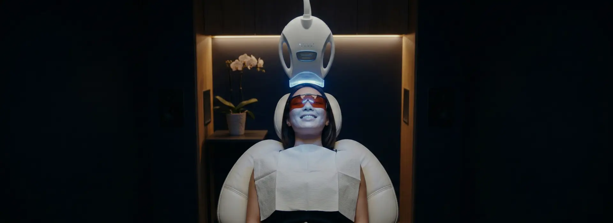
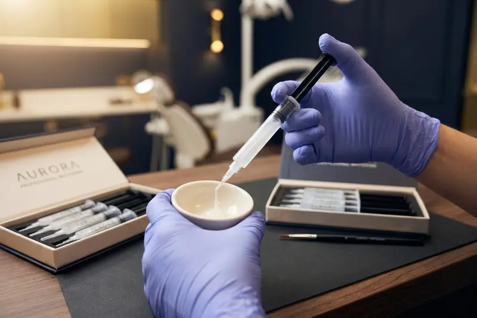
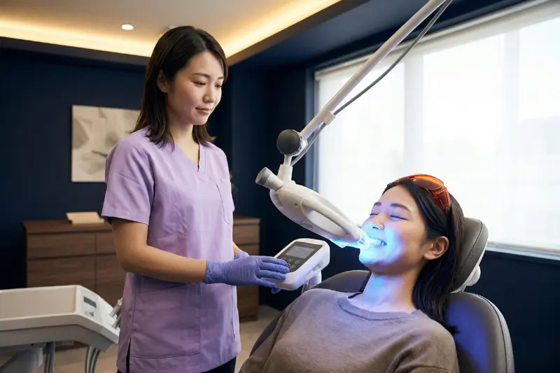
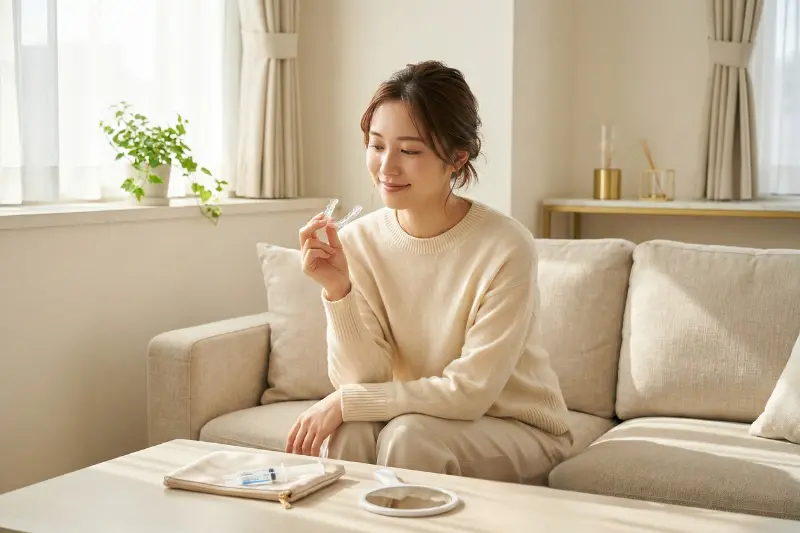

ホワイトニング
WHITENING
透明感のある、輝く白い歯へ。
こんなお悩みありませんか？
- ✔ コーヒーやタバコの着色汚れが気になる
- ✔ 加齢とともに歯が黄ばんできた気がする
- ✔ 結婚式や大切なイベントに向けて歯を白くしたい
- ✔ 市販のホワイトニング歯磨き粉では効果を感じない
- ✔ 以前ホワイトニングをした際に、しみて痛かった
医療機関だからできる
本物のホワイトニング

歯科医院で行う医療ホワイトニングは、エステサロンなどのセルフホワイトニングとは異なり、歯科医師・歯科衛生士のみが扱える「過酸化水素」という専用の薬剤を使用します。
表面の汚れを落とすだけでなく、歯の内部の色素まで分解し、本来の歯の色よりもさらに白く漂白することが可能です。当院では「痛みにくく、しみにくい」高品質な薬剤を厳選して使用しています。
ライフスタイルに合わせて選べる3つのメニュー

オフィスホワイトニング（歯科医院で行う）
プロのスタッフが専用の薬剤と特殊な光を照射して行う方法です。高濃度の薬剤を使用するため、1回の施術で白さを実感しやすいのが特徴です。
- ・即効性があり、短時間で白くなる
- ・スタッフにお任せなので手間がかからない
- ・イベント前など、お急ぎの方におすすめ
33,000円（税込） / 1回

ホームホワイトニング（ご自宅で行う）
患者さま専用のマウスピースを作成し、ご自宅で専用ジェルを注入して毎日数時間装着していただく方法です。徐々に白くなるため、色戻りしにくいのが特徴です。
- ・自分のペースで好きな時間に行える
- ・奥歯まで全体を白くできる
- ・じっくり白くするため、白さが長持ちする（色戻りが遅い）
38,500円（税込） / 両顎キット
デュアルホワイトニング当院のおすすめ
オフィスホワイトニングとホームホワイトニングを併用する方法です。それぞれのメリットを掛け合わせることで、最も白く、美しい状態を長期間キープできます。
- ・目標とする「真っ白な歯」を目指せる
- ・即効性と持続性の両方を兼ね備えている
- ・芸能人やモデルのような白さを希望する方におすすめ
66,000円（税込） / セット価格
3つの手法の比較
| オフィスホワイトニング | ホームホワイトニング | デュアルホワイトニング 一番おすすめ |
|
|---|---|---|---|
| 即効性 | ◎ 1回で実感 | △ 2週間程度かかる | ◎ 1回で実感 |
| 到達できる白さ | 〇 自然な白さ | 〇 自然〜少し明るい白さ | ◎ 限界まで輝く白さ |
| 持続性（色戻り） | △ 3〜6ヶ月程度 | 〇 6ヶ月〜1年程度 | ◎ 1〜2年程度長持ち |
| 手間 | ◎ 通院のみで楽 | △ 毎日自分で装着 | △ 通院＋自宅ケア |
| 痛み・しみにくさ | △ 高濃度なので出やすい場合あり | 〇 低濃度なので出にくい | 〇 コントロール可能 |
料金表
ホワイトニングメニュー
| オフィスホワイトニング（1回） | 33,000円 |
|---|---|
| オフィスホワイトニング（3回コース） | 88,000円 |
| ホームホワイトニングキット （専用マウスピース上下＋ジェル約2週間分） |
38,500円 |
| 追加ジェル（1本） | 3,300円 |
| デュアルホワイトニング （オフィス1回＋ホームキット） |
66,000円 |
※表示価格はすべて税込です。
※効果には個人差があります。
※虫歯や歯周病がある場合は、先に治療が必要となる場合があります。
よくあるご質問
元の歯の色や質によりますが、オフィスホワイトニングの場合、1回の施術でシェードガイド（色見本）で1〜2段階程度白くなる方が多いです。真っ白にしたい場合は、数回の施術やホームホワイトニングとの併用が必要です。
当院では、しみにくい最新の薬剤を使用していますが、歯の質（知覚過敏、エナメル質が薄いなど）によっては一時的に「キーン」としみるような痛みが出ることがあります。通常は24時間以内に治まりますのでご安心ください。
ホワイトニングの薬剤は「天然の歯本体」にのみ作用するため、人工物（プラスチックの詰め物、銀歯、セラミックなど）の色を白くすることはできません。周りの歯が白くなった後、色を合わせて人工物を再製する審美歯科治療をおすすめする場合があります。
施術後24時間〜48時間は、歯が着色しやすい状態になっています。コーヒー、紅茶、赤ワイン、カレー、醤油など、色の濃い食べ物や飲み物、タバコは控えていただくようお願いしています。
ホワイトニング 無料カウンセリング予約
今の歯の色を確認し、どのくらい白くなるかシミュレーションできます。
まずはお気軽にご相談ください。
お電話でのご予約
03-0000-0000